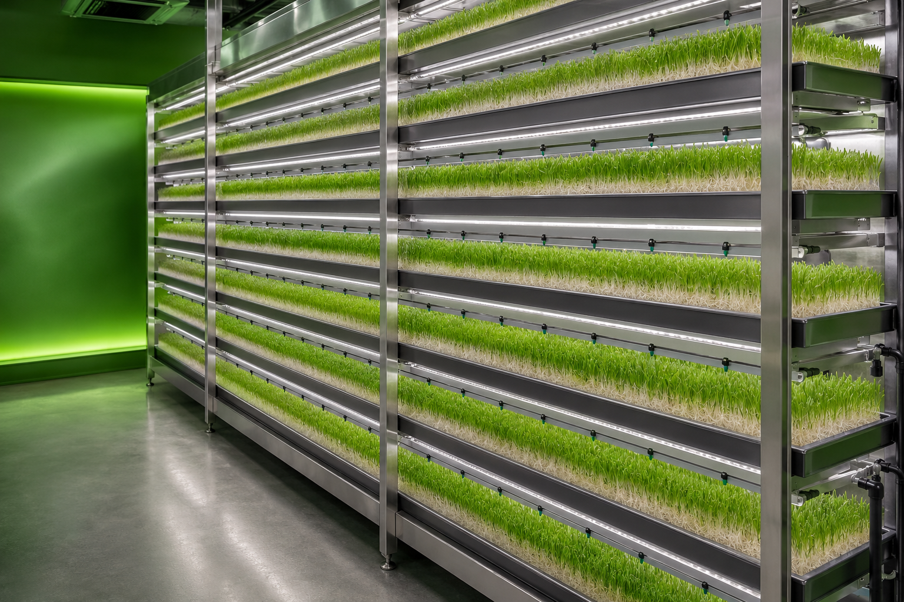
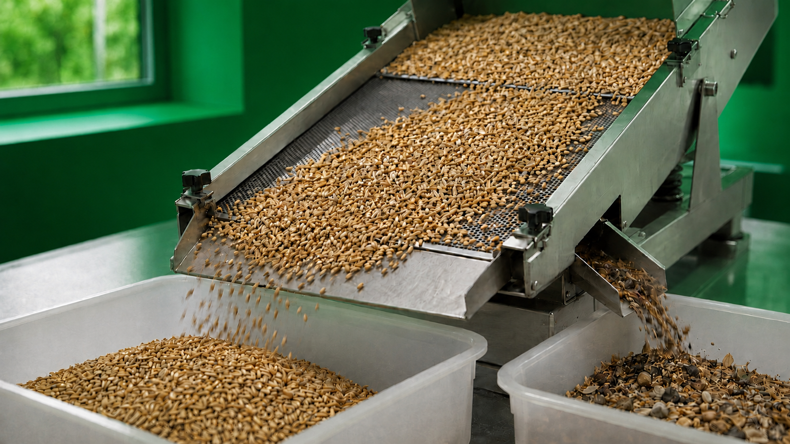

Hydroponische Frischfutterproduktion
Pilotphase in Vorbereitung
Hydroponisches Grünfutter als kontrolliertes Pilotprojekt
Bavaria AeroTech bereitet eine hydroponische Pilotanlage für Frischfutter vor. Im Mittelpunkt stehen die technische, hygienische, praktische und wirtschaftliche Validierung unter realen Betriebsbedingungen.

Der Pilotansatz
Ein nachvollziehbarer Kreislauf für die Validierung
Das Vorhaben ist als kontrollierter Pilot angelegt, nicht als bereits laufende industrielle Anlage. Die einzelnen Prozessschritte sollen unter dokumentierten Bedingungen erprobt und gemeinsam mit geeigneten Partnern ausgewertet werden.
So entsteht eine belastbare Grundlage für spätere Entscheidungen – abhängig von Finanzierung, Genehmigungen und der Pilotvalidierung.
Geplanter Prozess
Vom geprüften Saatgut bis zum wiederverwendbaren Schalenkreislauf
Die Bildfolge zeigt die vorgesehene Prozesslogik. Ihre technische Ausgestaltung wird erst im Pilotbetrieb validiert.

Trockenes Getreide wird gereinigt und kalibriert. Fremdkörper, Staub, beschädigte Körner und Bruchkorn werden entfernt. Das verwendete Saatgut soll eine Keimfähigkeit von mindestens 95 % aufweisen.
01Saatgutreinigung und KalibrierungTag 0
Trockenes Getreide wird gereinigt und kalibriert. Fremdkörper, Staub, beschädigte Körner und Bruchkorn werden entfernt. Das verwendete Saatgut soll eine Keimfähigkeit von mindestens 95 % aufweisen.
Saatgutreinigung und Kalibrierung
02Einweichen und DesinfektionTag 0 · 4–12 Stunden
Das gereinigte Saatgut wird vier bis zwölf Stunden in temperiertem Wasser bei 18 bis 20 °C eingeweicht. Zur hygienischen Vorbereitung kann das Prozesswasser mit Ozon oder einer lebensmittelgeeigneten Wasserstoffperoxidlösung behandelt werden.
Einweichen und Desinfektion des Saatguts
03Automatische Verteilung und KeimungTag 1–2
Das eingeweichte Saatgut wird gleichmäßig in Anzuchtschalen verteilt. Während der ersten 48 Stunden keimt es in einer dunklen Zone bei kontrollierter Temperatur und Luftfeuchtigkeit.
Automatische Verteilung und Keimung in Anzuchtschalen
04Vertikales Wachstum unter LED-LichtTag 3–6
Ab dem dritten Tag wachsen Wurzeln und grüne Triebe in einem vertikalen System weiter. LED-Beleuchtung, sensorgesteuerte Bewässerung, Temperatur und Luftfeuchtigkeit werden kontrolliert geführt.
Vertikales Wachstum unter LED-Licht
05Ernte und ReinigungTag 7
Am siebten Tag wird die fertige Grünfuttermatte maschinell entnommen und portioniert. Anschließend werden die leeren Trays gereinigt, desinfiziert und in den Produktionskreislauf zurückgeführt.
Ernte der Grünfuttermatte und Reinigung der Trays
Biomassekonvertierung
Aus trockenem Getreide entsteht innerhalb von 7 Tagen frisches hydroponisches Grünfutter.
Trockengetreide
168 Stunden
Frisches Grünfutter
- Konvertierungsfaktor≈ 1 : 8
- Saatgutbedarf600–625 kg / Tag
- Produktionsleistungbis zu 5.000 kg / Tag
- Produktionszyklus7 Tage / 168 Stunden
Pilotvalidierung
Was im Pilotbetrieb belastbar geprüft werden soll
Der Pilot soll Erkenntnisse liefern, nicht vorwegnehmen. Alle Bewertungen bleiben abhängig vom realen Verlauf und der gemeinsamen Auswertung mit den beteiligten Partnern.
- Technische Stabilität: Wiederholbare Abläufe und die Zuverlässigkeit der vorgesehenen Komponenten bewerten.
- Hygiene: Reinigungs- und Prozessabläufe auf ihre praktische Umsetzbarkeit prüfen.
- Produktkonsistenz: Gleichmäßigkeit des Frischfutters im Pilot beobachten.
- Wasser, Energie und Arbeit: Anforderungen erfassen, ohne Einsparungen oder Erträge zu versprechen.
- Sensorik und Steuerung: Die geplante Integration von Sensoren und Steuerung im Betrieb bewerten.
- Praktische Eignung: Handhabung, Ernte, Reinigung und Arbeitsabläufe unter realen Bedingungen prüfen.
- Wirtschaftliche Skalierbarkeit: Eine Grundlage für spätere Entscheidungen schaffen – vorbehaltlich der Pilotresultate.
Kooperationen im Pilot
Landwirtschaftliche und wissenschaftliche Partner gesucht
Für die Vorbereitung und spätere Pilotvalidierung sucht Bavaria AeroTech den Austausch mit landwirtschaftlichen Betrieben, wissenschaftlichen Partnern und fachlich passenden Akteuren.
Im Fokus stehen praxisnahe Fragestellungen, transparente Dokumentation und eine sachliche gemeinsame Auswertung.
Kooperation besprechenFAQ
Häufige Fragen zur Pilotphase
Ist die hydroponische Anlage bereits in Betrieb?
Nein. Die Pilotphase befindet sich in Vorbereitung. Umsetzung und Betrieb sind abhängig von Finanzierung, Genehmigungen und der weiteren Projektplanung.
Ist bereits eine regelmäßige Lieferung von Frischfutter möglich?
Nein. Eine regelmäßige Belieferung wird derzeit nicht angeboten. Zunächst soll der geplante Prozess im Pilotbetrieb validiert werden.
Welche Partner sind für den Pilot relevant?
Relevant sind insbesondere landwirtschaftliche Betriebe, wissenschaftliche Partner und fachlich passende Akteure, die an einer praxisnahen Pilotvalidierung interessiert sind.
Nächster Schritt
Pilotkooperation für hydroponisches Grünfutter anstoßen
Sie möchten eine fachliche Perspektive einbringen oder eine mögliche Zusammenarbeit für die Pilotphase besprechen?
Projektanfrage senden